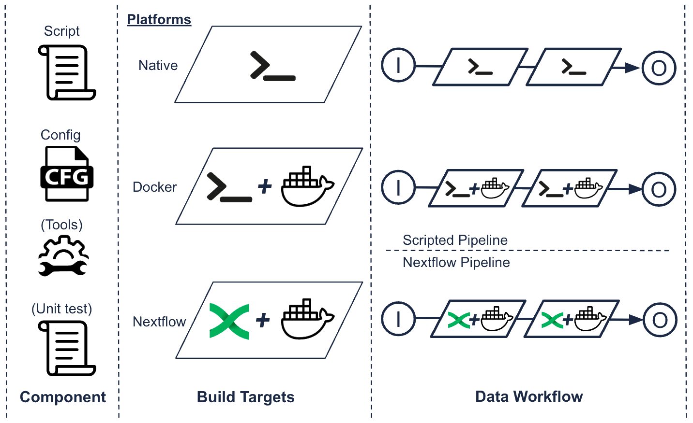
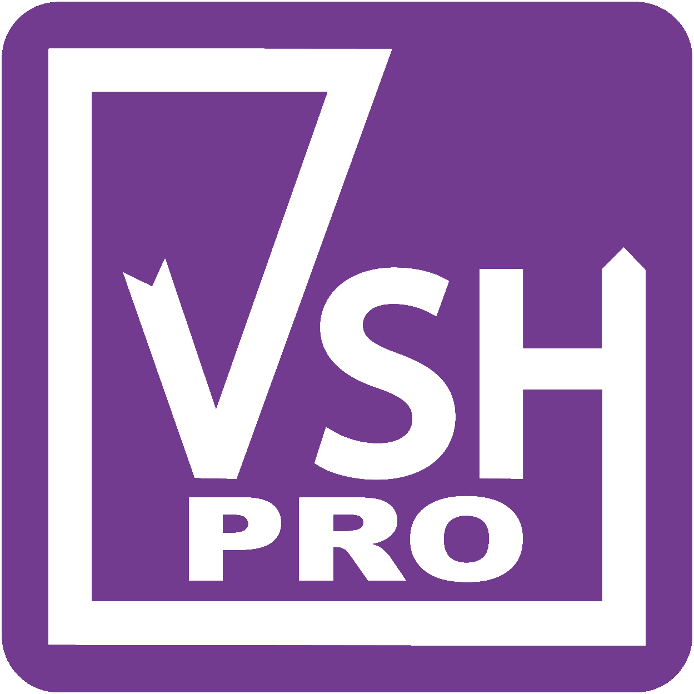

Viash is a tool that simplifies the creation of data pipelines in biotech R&D by allowing researchers to turn their scripts into modular, script language-independent building blocks that can be easily integrated into any data pipeline. Viash uses code generation to automatically wrap the script in a data workflow module, complete with built-in interfaces for inputs and outputs.
Viash is designed to be easy to use even for those without expert knowledge in data workflows and allows researchers to create high-quality data pipeline modules. Researchers can focus on the functionality of their script without needing to worry about the data workflow framework.
Viash is an open source tool that is freely available.
For professional use, we recommend the Viash PRO subscription.
Viash offers numerous advanced features, including support for multiple scripting languages and an easy-to-use command-line interface, to streamline your workflow and guarantee reproducibility. Viash can generate script language-independent Nextflow modules automatically, build custom Docker containers, and include built-in unit testing.
Write a small script or code block in a common script language that defines the functionality you want your pipeline component to have.
Add metadata (config) to define the component’s configuration, such as input and output parameters, dependencies, and versioning information.
Use Viash to build a script language agnostic building blocks for different platforms. Viash generates a Docker container based on your requirements.
Design your pipeline by chaining together building blocks, and use Nextflow to manage the pipeline’s execution.

TO DO: Create a horizontal graphic with the steps creating a data pipeline with Viash
Viash PRO is a commercial subscription for use in critical environments.
A key advantage of using Viash PRO is that it is backed by the support of Data Intuitive, so users can get priority help with any issues or questions that they may have.
This provides a number of benefits for organizations that require a long-term solution and a stable, secure data workflow environment for their Biotech R&D department.

| Personal Use | Viash PRO for non-profit | Viash PRO | |
|---|---|---|---|
| Licence | GPL V2 Open Source | GPL V2 Open Source | GPL V2 Open Source |
| Use | Personal | Non-profit | Industry |
| Response Time | Ad Hoc | Max. 16 business hours | Max. 8 business hours |
| Contact | Github | Dedicated Slack Pro Channel | Dedicated Slack Pro Channel |
| Download | Contact us | Contact us |
Viash provides the ability to implement a long-term strategy for effectively managing knowledge in data workflows.
Viash’s modular approach leads to improved efficiency in the use of research staff and IT support, resulting in a higher-quality end product.
Viash generates validated high-quality software code to ensure the reliability and accuracy of biotech processes.
Viash modules do not create vendor lock-in, as they are designed to function independently even without Viash.
Viash simplifies the creation of data pipelines by turning scripts into easily-integrated modular components.
Viash automatically generates a custom Docker container based on dependencies described in your metadata to ensure reproducibility by design.
Viash supports scalable infrastructure and automatically creates boilerplate code for Nextflow compatibility.
Viash’s modules enable flexible data pipeline design and development for easier adaptation to changing needs.
Viash supports the combination of multiple scripting languages (Bash, Python, R, Scala, JS, C#) in a pipeline.
Viash generates standalone, Docker, and Nextflow executables to be run independently of the script’s language, using metadata as a basis.
Viash includes built-in unit testing capabilities for debugging and testing of individual components in a pipeline.
Viash executables include support for developers through command-line arguments, type checking, and validation of required parameters and input files.